Dunkleosteus
Cá bọc thép khổng lồ kỷ Devon
Tổng quan
Kỷ
Devon
Họ
Dunkleosteidae
Chi
Dunkleosteus
Dài
8~10 m
Nặng
3.6 tấn
Thức ăn

Dunkleosteus là một chi cá da phiến tuyệt chủng, từng tồn tại vào cuối kỷ Devon, khoảng 380-360 triệu năm trước. Vài loài, ví dụ như D. terrelli, D. marsaisi, và D. magnificus, nằm trong số những loài cá da phiến lớn nhất từng sinh tồn.
Nguồn: wikipedia.org
Phân bố
Bắc Mỹ, Châu Âu và Ma-rốc

Thông tin thêm về Dunkleosteus
Tên khoa học
Phát âm: "Dunkle-os-tee-us". Tên này có nghĩa là "Xương của Dunkle" - Được đặt theo tên của nhà cổ sinh vật học David Dunkle, người đã mô tả các hóa thạch. Osteus trong tiếng Hy Lạp có nghĩa là xương, đề cập đến những tấm xương khổng lồ tạo nên đầu và hàm.

Kích thước khổng lồ
Dunkleosteus terrelli là loài lớn nhất và rất có thể là loài cá lớn nhất trong kỷ Devon!

Ngoại hình
Chúng có bộ giáp giống như xe tăng. Đầu và hàm của Dunkleosteus bao gồm các tấm giáp dày.

Chế độ ăn uống
Dunkleosteus là động vật ăn thịt. Chúng là một trong những loài cá lớn nhất và mạnh mẽ nhất từ trước đến nay, nó có thể ăn bất cứ thứ gì.

Kỷ nguyên
Cuối kỷ Devon. Hóa thạch của Dunkleosteus được tìm thấy trong các đơn vị đá Devon muộn có tuổi Frasnian và Famennian ( 382-358 Myo).

Khám phá
Terrell 1867: hài cốt của Dunkleosteus lần đầu tiên được phát hiện bởi nhà cổ sinh vật học nghiệp dư Jay Terrell và con trai của ông vào năm 1867 dọc theo vách đá Hồ Erie tại thị trấn Sheffield Lake. Ông gọi con vật này là Cá Khủng . Loài vật này được tái phát hiện bởi nhà cổ sinh vật học David Dunkle. Loài lớn nhất cuối cùng được đặt tên là Dunkleosteus terrelli để vinh danh Dunkle và Terrell.

Sự thật thú vị
Giống như tất cả các Placodederms, Dunkleosteus không có răng. Tuy nhiên, các tấm hàm bọc thép của nó đã tạo thành những lưỡi dao tự mài sắc khổng lồ!

Với trọng lượng 1.000 pound (21.000 pound trên mỗi inch vuông), Dunkleosteus có thể nhai xuyên qua xương. Lực lượng này ngang ngửa với Cá sấu khổng lồ!
Sự tuyệt chủng
Dunkleosteus đã tuyệt chủng cùng với tất cả các loài Cá da phiến khác trong sự kiện tuyệt chủng hàng loạt kỷ Devon.